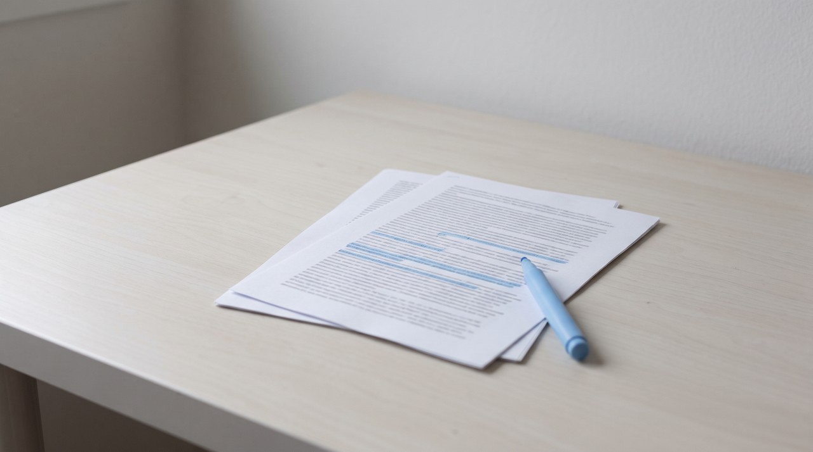

How to find the clip moments in a long GTA 6 stream without watching all of it
Pull the transcript with its timestamps, search for the reaction words streamers shout during big moments like "clip that" or "no way", and jump straight to those seconds instead of sitting through four hours of video. Make sure to look at the frames around each mark too, because text alone misses purely visual moments. Only cut clips when a streamer has actually asked for them, and verify any GTA 6 clipping campaign yourself before you spend a night working on it.
GTA 6 comes out on 19 November 2026 for PlayStation 5 and Xbox Series X|S, and the first week will bring plenty of broadcasts running four, six or eight hours. If you cut clips for a streamer, editing is rarely the part that slows you down. The real time sink is hunting through all those hours to find the twenty moments worth cutting, and most people still do that by scrubbing the timeline with the volume turned up.
You can get through that work much faster by using a transcript, which is simply the spoken audio converted into text with the exact second each line was said. Reading and searching through text takes a few minutes, so you only have to open the video file at the specific seconds that actually matter.
What is a GTA 6 clipping campaign, and what does it really pay?
A clipping campaign is an arrangement where a streamer or a brand puts money into a pool and pays clippers based on the views their short videos bring in. You upload the clip, the platform verifies the views, and you earn a set rate per 1,000 approved views until that money pool runs dry. Whop, one of the main marketplaces for these deals, notes that the average is about $1 per 1,000 views, though every brand decides its own payout rate.
Looking at the math honestly, the payouts are modest. Getting 100,000 approved views at $1 per 1,000 brings in $100, and many campaigns put a ceiling on what a single clip can earn or stop paying the moment the budget empties. NPR's look into the clipping business mentions single success stories and rates as low as $0.50, without showing what an average clipper takes home. If you are working from Pakistan, Whop does include Pakistan on its list for payouts, so just check which transfer option works best for your account before you begin.
There is also a specific rule to keep in mind when working with GTA video. Rockstar's official policy on posting its material defines non-commercial use as "you don't make money through the game footage you post", and it also rules out using its material to promote a product or service. A campaign that pays you to promote a creator or a brand using GTA footage falls outside what Rockstar says it allows. I have not seen any official Rockstar clipping campaign or any statement from them permitting paid GTA 6 clips, which means you and the streamer carry that risk.
How do you check that a clipping campaign is real?
Fake offers tend to pop up fast during launch week, and GTA 6 already has a history of scams around fake downloads and early access. A bogus clipping deal is just as simple to put together, because all someone needs is a social post and a payout promise. Before you commit a night to cutting footage, verify these five things on the exact day you sign up.
- You never pay to join. Any campaign asking you for an entry fee, a paid course or a deposit is trying to take your money rather than pay you.
- The offer appears directly on the official marketplace, and the streamer or brand funding it is clearly named and verifiable.
- The campaign budget still has money in it, and you have checked both the maximum payout per clip and the minimum view threshold.
- The terms clearly state which viewer countries qualify, since some campaigns only pay out for traffic coming from specific regions.
- The streamer has explicitly requested clips from their broadcast. Never cut and upload footage from someone who did not ask for it.
How do you find clip moments from a stream's transcript?

Streamers usually get loud right when something worth watching happens. They yell "clip that", shout, swear, laugh, or ask "no way" and "did you see that". Every one of those reactions gets captured in the transcript alongside a timestamp, letting a quick text search do the heavy lifting for you.
- Get the stream as a transcript with timestamps. The free way and the VideoDoc way are both below.
- Search the text for the trigger words: clip, no way, oh my god, what was that, chat, did you see. Note every timestamp that comes up.
- Look for lines where the streamer talks fast, repeats one word, or reacts to chat. Those are often the funniest parts.
- Look for long gaps between timestamps too. A quiet minute in a loud stream often means a tense moment of play.
- Open the video at each noted second, watch 30 seconds either side, and keep only the moments that still work without the rest of the stream.
Expect to keep only a few of the marks you find. Searching for keywords gives you rough candidates rather than ready clips, so you still have to watch them yourself to decide what is worth posting.
A text transcript only records spoken words. An impressive driving sequence with zero commentary will never appear in a keyword search, and heavy game audio or background music can easily drown out speech. VideoDoc will not select clips on your behalf, cannot tell what is funny, and does not edit or upload videos. It only processes public links or a file you already have, so always work from the streamer's own recording with their permission. Stay completely away from leaked footage, as Rockstar states they take those videos down regardless of how anyone got the file.
What is the free way to get a stream's transcript?
When a streamer saves their broadcast on YouTube, you can run this whole process without spending anything. Open the video page, click the three dots or expand the description, and select Show transcript. YouTube lists every spoken line next to its timestamp, so you can copy all that text into a plain file and search it using Ctrl+F.
That free method runs into three clear roadblocks. Auto-generated captions frequently mangle game terms and slang, meaning a search for the exact word you want might turn up nothing. Past broadcasts on Twitch rarely come with a transcript at all, and Twitch removes those saved videos after a set number of days. You also get zero visual frames, so checking every keyword match still forces you to open the player and scrub to that second.
What does VideoDoc add for clippers?
I created VideoDoc to convert a video into a structured document that either a person or an AI can read, and the feature that helps clippers most is that every element is anchored to the exact second. The tool runs locally on your own machine, accepts a public URL or a video file on your drive, and outputs both a PDF and a Markdown file containing the timestamped transcript along with still frames captured from the footage.
| The job | Free way | With VideoDoc |
|---|---|---|
| Getting the words | YouTube's Show transcript, when the stream has one | A transcript with timestamps, made on your computer from a link or a file |
| Seeing the moment | Open the video and scrub to the second | Save every frame at 1, 2 or 4 a second, each picture named by its exact moment |
| Finding it again later | Write the time down by hand | A CSV list of every picture and the moment it came from |
| Repeated frames | You skip them yourself | Exact duplicate frames are removed for you |
Those still frames solve the main blind spot of working from text alone. Saving frames at 1 a second across a four hour broadcast produces around 14,400 images, though you never need to browse through all of them. You just inspect the frames sitting right around the timestamps your keyword search flagged, and you can scan through quiet gameplay as still images instead of watching the video play out. I also included a CSV list of moments because I kept losing track of specific frames in my own recordings, and sorting a spreadsheet file is far quicker than scrolling through a giant image folder.
Try it on a stream you are allowed to clip.
Free to try in your browser. Pro is $19 once, for two computers, on Windows and Apple Silicon Macs.
Quick questions
How much does a GTA 6 clipping campaign pay?
Most campaigns pay out per 1,000 verified views, and Whop reports the average rate at around $1 per 1,000. At that rate, 100,000 approved views brings in roughly $100, assuming you do not hit a per-clip earning cap. I have not found any official Rockstar campaign, so any GTA 6 offer comes from a third party and needs to be verified on the day you join.
Is it allowed to make money clipping GTA 6 streams?
Rockstar's official policy defines non-commercial use as earning no money from the game footage you share, and it prohibits using their material to promote a product or service. I have seen no statement from Rockstar allowing paid GTA 6 clips. Plenty of people still cut and post them, though that relies on informal tolerance rather than actual permission.
Can I find clip moments without watching the whole stream?
Yes. Pull the timestamped transcript for the broadcast, search for reaction phrases like clip, no way or did you see that, and only watch the footage around those specific seconds. Look at the surrounding video frames too, because text transcripts miss moments that happen without anyone speaking.
Can I clip any streamer's GTA 6 stream?
You should only cut clips for a streamer who has asked for them, either via an active campaign or direct written permission. Their broadcast belongs to them, and uploading their content without approval can get your videos taken down. Never touch leaked game footage under any circumstances.
Take one long broadcast that you have permission to use, run a search for "clip that" in its transcript tonight, and see how many of those timestamps turn into usable clips.

I am a telecom engineer and business analyst from Pakistan, and I build small honest desktop tools under Designesh. I made VideoDoc because I wanted my AI to read the lectures I study from. Everything here is tested on my own machine first.